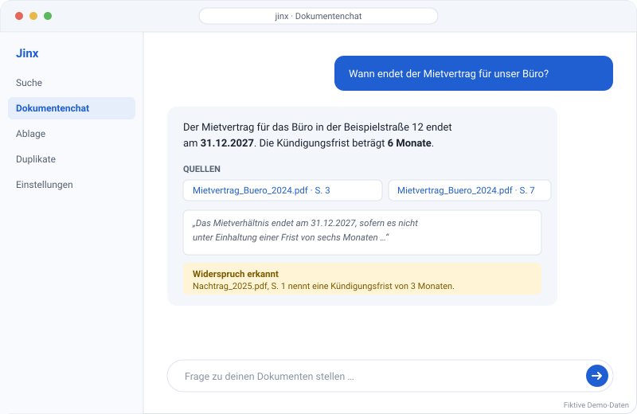
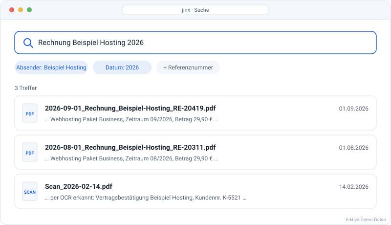
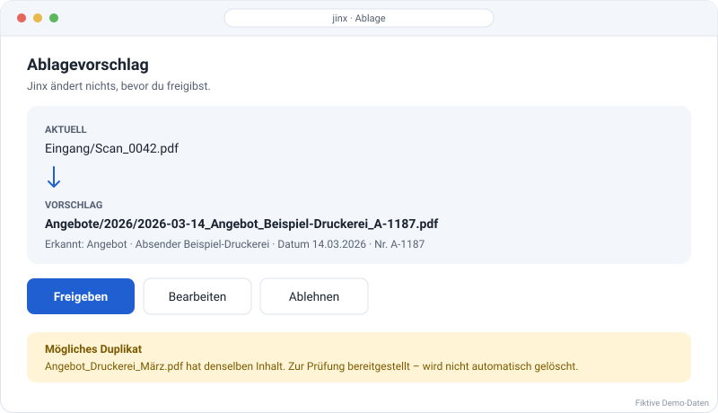

Jinx von Fix it IT
KI-Dokumentenmanagement für Startups – mit Jinx einfacher arbeiten
Deine Ideen brauchen Zeit. Nicht dein Papierkram.
Jinx ist deine KI-gestützte Dokumentenplattform für Startups und kleine Unternehmen. Geschäftsdokumente zentral ablegen, Informationen finden und Fragen zu eigenen Unterlagen stellen – mit nachvollziehbaren Quellen.

Weniger Verwaltungsaufwand, mehr Zeit fürs Wachstum
Wer ein Startup gründet, hat selten ein großes Backoffice. Angebote, Verträge, Rechnungen und andere Dokumente landen schnell in unterschiedlichen Ordnern. Jinx unterstützt dich dabei, Informationen zu erfassen, Unterlagen wiederzufinden und eine nachvollziehbare Dokumentenstruktur aufzubauen. So bleibt mehr Zeit für Kunden, Produktentwicklung und Wachstum.
Was Jinx heute für dein Startup kann
Dokumente intelligent durchsuchen
Finde Unterlagen nach Inhalt, Absender, Datum oder Referenznummer.
Fragen zu Dokumenten stellen
Jinx liefert Antworten mit Dokument-, Seiten- und Textquellen. Widersprüche werden gekennzeichnet.
Dateien strukturiert ablegen
Vorschläge für Dateinamen und Ordner werden erst nach deiner Freigabe umgesetzt.
Scans verarbeiten
OCR und Analyse erschließen Inhalte eingescannter Dokumente.
Duplikate prüfen
Doppelte Dateien werden erkannt. Jinx löscht sie nicht automatisch.
Zugriff kontrollieren
Rollen, Berechtigungen und Zwei-Faktor-Anmeldung für Administratoren unterstützen die Verwaltung.
So sieht Jinx im Alltag aus


Alle Ansichten zeigen fiktive Demo-Daten.
KI mit Kontrolle über deine Geschäftsdaten
- Das Sprachmodell arbeitet lokal. Dokumentinhalte werden für die KI-Verarbeitung nicht an externe KI-Dienste gesendet.
- Originaldateien werden verschlüsselt und unverändert abgelegt.
- Änderungen sind protokolliert und können zurückgenommen werden.
- Werkzeuge für Auskunft, Aufbewahrung und die Freigabe von Löschanträgen.
Auch für wachsende Teams
Jinx ist über den Browser und auf dem Smartphone nutzbar. Benutzerrollen und getrennte Kundenbereiche unterstützen die Arbeit in Teams.
Was als Nächstes geplant ist
Wir entwickeln Jinx weiter. Geplant sind unter anderem eine Projektverwaltung mit Aufgaben, Budgets und Fristen, eine Berichtserstellung sowie Workflows für Eingangs- und Ausgangsrechnungen. Diese Funktionen sind noch nicht verfügbar.
Jinx kennenlernen
Du möchtest deine Dokumentenverwaltung von Anfang an professionell aufstellen? Lass dir Jinx in einer Demo zeigen und prüfe, ob die Plattform zu den Abläufen deines Startups passt.
Demo anfragenHäufige Fragen
Was ist Jinx?
Jinx ist eine KI-gestützte Dokumentenplattform von Fix it IT für kleine Unternehmen und Startups.
Kann Jinx meine eigenen Dokumente durchsuchen?
Ja. Jinx kann Inhalte erschließen und Fragen mit Quellenangaben beantworten.
Löscht Jinx Dateien automatisch?
Nein. Duplikate werden zur Prüfung bereitgestellt; Umbenennungen und Verschiebungen erfordern deine Freigabe.
Ist Jinx auf dem Smartphone nutzbar?
Ja, die Browseroberfläche ist für kleinere Bildschirme ausgelegt.
Kann Jinx schon Rechnungen erstellen?
Noch nicht. Eine umfassende Rechnungsfunktion ist in Planung.